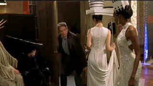

| Town
& Country/C,B+ |
| New
Line/2001/105/ANA 1.85 |
Poking fun at upper middle class foibles is a time honored
source for modern Hollywood farce. Bedroom games, musical mates, chance meetings and some
silly hijinx are cogs in the farcical wheel. Sometimes, farce falls flat
on its face. Town & Country fails to rev up its engine from
the very
first voiceover ignition from the sack by married man Porter
Stoddard.
 |
| Beatty
as a mad sexual hatter. ©New Line |
Director Peter Chelsom is a very talented
filmmaker. From his debut film Hear My Song to the wonderfully
brilliant comic sleeper Funny Bones to the recent beautiful
fantasy The Mighty, Chelsom has displayed a rare sense of film
rhythm. His films have been uniformly agile without feeling rushed. Town
& Country, sadly, is an exception. It fails to marry any of the
parts with success. It a sunken soufflé of ideas.
There's a sense that the ambitious
multi-storied material has been thinly sliced with a meat clever.
What poses as madcap comedy in the Stoddard household doesn't go far
enough to go anywhere. The whiff of youth is nothing more than a
brisk fresh of mountain air. In a nutshell, sixtyish Stoddard is
fooling around, his best buddy Griffin is spotted in the shack,
apparently Griffin's wife Mona is lusting after Stoddard since college
days, Eugenie appears to be a nymphomaniac, Auburn is blonde and likes
older men, and Ellie Stoddard is hanging around like an old piece of
furniture that's sagging from too much use. With a whiff of Paris, a
base of New York, a dash of the Hamptons, and a frosting of Sun Valley, Town
& Country sniffs around with a big nose.
A hint of the manic sense of chaotic explosiveness
often invested in Warren Beatty performances is only tantalizing in Town
& Country. Beatty's Porter Stoddard doesn't seem to know which
way to turn and Beatty is left in the lurch. Ellie is, well, played by
Diane Keaton. Diane Keaton does Diane
Keaton forever and you only want to see more of Goldie Hawn as Mona. Gary
Shandling's Griffin leaves an undefined aftertaste in the mouth to say the least. Where can he go
with this bare bones virtually emasculated man in homoerotic crisis? One
more simpering smile from Natasha Kinski would have sorely tempted me be
cut her strings. What can you say about Andie McDowell and Charlton
Heston: they were simply left holding an empty bag.
You could make a pretty photo album from the
picture postcard transfer of Town & Country. Bright colors
are fully saturated and stable. A consistent level of crisp
detail is on display in every setting. Nights sparkle and days are well
lit. There's virtually no edginess to the images. Rolfe Kent's score is
delivered in light airy tones and dialogue is rock solid centered on the
Dolby Digital 5:1 sound track.
|
|
|
|

Selections from the Feature Archive include articles on
Akira Kurosawa, Blonde Bimbos,
Frank
Darabont, Steven Culp,
John
Herzfeld or Vietnam: The
Hollywood Pariah, and many more....
The Bitch Brigade

A line-up of lean-lipped
actresses who marched through Hollywood in a high heeled goose step armed with razor sharp
dialogue. Click on the image to read all about them.

 Have you visited Home Theater
Talk lately? One of the friendliest places on the Net for Home Theater and DVD discussion, you
can get help for installation problems or simply share your opinions with other Vidiots. Have you visited Home Theater
Talk lately? One of the friendliest places on the Net for Home Theater and DVD discussion, you
can get help for installation problems or simply share your opinions with other Vidiots.

ISF Monitor Calibrations in the
Tristate New York area. Lots of hardware info and frequent hardware peaks from video expert Kevin
Miller. They may be judgmental, but that's the point, isn't it. Lots of DVD reviews plus news and
more.

The
DVD Answer Man is a new site devoted to spreading the DVD gospel. Answers to
questions, reviews, links and more....

DVD links, information about Web specials, news, Site reviews.

DVD packaging can be the bane of the collector. Click on Rants and
Raves for more.
The DVD Package
|